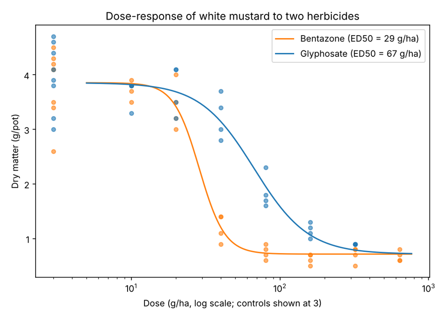
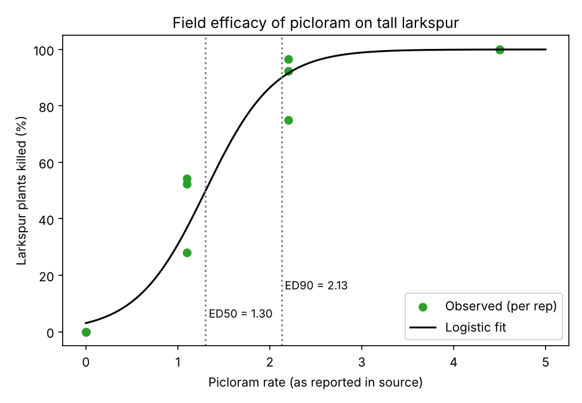
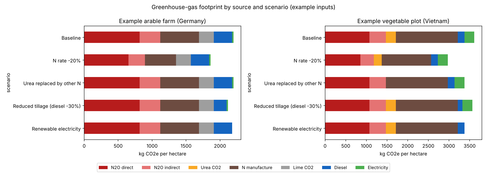

Case study · Crop protection and agronomy
How much product is enough, and what does it cost the climate?
Crop protection and agronomy teams have to show that a product works, at which rate, and with what side effects. I worked through those questions with published trial data, from dose-response curves to the greenhouse-gas footprint of inputs, and checked every result against an independent method or the original publication.
The work, step by step
Real published data, open code, and automated tests that confirm the reported results.
Compare active ingredients
Glyphosate and bentazone on white mustard (Christensen et al., 2003): four-parameter log-logistic models with shared limits, ED10, ED50 and ED90 with delta-method confidence intervals, and relative potency.
Bentazone reached 50% effect at 29 g/ha against 67 g/ha for glyphosate, 2.3 times more potent. Its curve was also much steeper (slope 5.1 vs 2.4), so its window between weak and full effect is narrower: rate accuracy matters more.

Set an effective field rate
Picloram on tall larkspur (Turner et al., 1992): logistic regression on kill counts, with the rates for 50%, 90% and 95% control and their confidence intervals.
90% control at rate 2.13 (95% CI 1.88–2.38), about half the highest rate tested. The model matches the coefficients published for this dataset, and the Python fit was reproduced in R.

Read field trials correctly
Multi-environment trial statistics on maize and rapeseed: ANOVA partition, stability analysis, GGE biplot and mixed-model heritability in R.
Environment explained 77% of maize yield variation, and the top-yielding hybrid was not the most stable. For rapeseed, heritability was only 0.08: the trials could not separate the varieties, a reminder to check trial power before claiming a difference.
Put a number on the climate cost of inputs
AgroCarbon: IPCC Tier 1 footprint of fertilizer, lime, diesel and electricity per hectare and per tonne, with scenarios such as cutting the nitrogen rate or reducing tillage. Python with unit tests, plus a browser calculator.
In both examples, nitrogen dominates the footprint (77% for wheat, 89% for cabbage). Cutting the N rate by 20% saves 15–18%; reduced tillage only 1–4%. Inputs are illustrative round numbers, not measured farm data.

What this shows
| Typical requirement | Where you can see it |
|---|---|
| Dose-response and efficacy analysis | Steps 01 and 02: log-logistic and logistic models, ED values, relative potency |
| Statistics with confidence intervals | Delta-method intervals, potency ratio with CI, rates for 50/90/95% control |
| Field trial design and analysis | Step 03: variance partition, stability, heritability |
| Sustainability and regulation awareness | Step 04: IPCC Tier 1 emissions, scenario comparison |
| R and Python, reproducible work | Python models cross-checked in R; automated tests on every project |
| Clear reporting | Short PDF reports and plain-language summaries for each project |
Limits: published research datasets, not company trials; the carbon examples use illustrative inputs; no resistance or residue data. These are method demonstrations.
Let's talk
I am completing my M.Sc. in Sustainable International Agriculture at the University of Göttingen and looking for roles in crop protection, agronomy and field trial analysis.